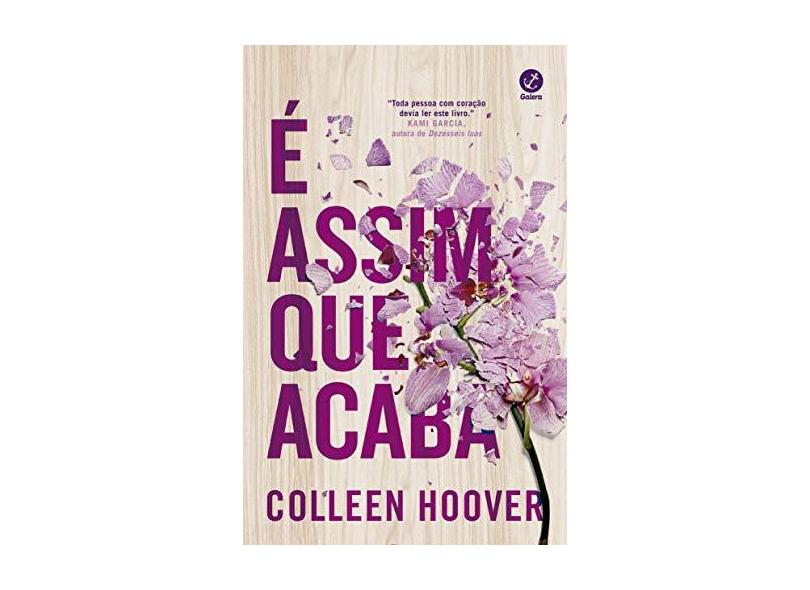
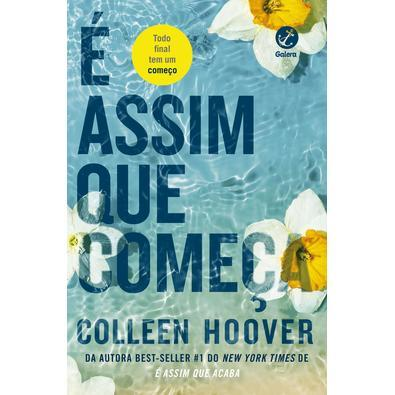
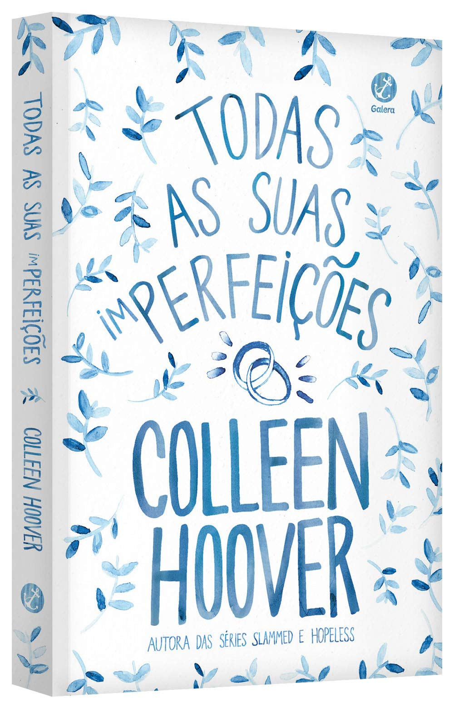

A Lojinha da Leitora
Início
Livros
Lojinha
Login
Cadastro
Quem somos
Bem-vindos à Lojinha da Leitora! Nós somos apaixonados por livros e acreditamos que a leitura é uma das melhores atividades que podemos realizar. Por isso, criamos essa loja para oferecer a vocês os melhores produtos para tornar a leitura ainda mais prazerosa e confortável.
Nossa loja possui uma grande variedade de livros de diversos gêneros, desde os clássicos até os mais recentes best-sellers. Temos livros para crianças, jovens e adultos, para todos os gostos e idades.
Além dos livros, oferecemos também uma seleção de acessórios para leitura, como marcadores de página, luminárias de leitura, porta-livros, almofadas de leitura, entre outros. Todos esses produtos foram escolhidos com muito cuidado para garantir que você tenha a melhor experiência de leitura possível.
Na nossa loja, você também pode encontrar eventos literários, como lançamentos de livros, sessões de autógrafos, clubes do livro e oficinas de escrita. Acreditamos que esses eventos são uma ótima oportunidade para conhecer outros leitores, trocar ideias e aprender mais sobre literatura.
Enfim, nossa loja é um lugar onde você pode encontrar tudo o que precisa para desfrutar da leitura da melhor forma possível.
Populares

É assim que acaba

É assim que começa

Todas as suas imperfeições